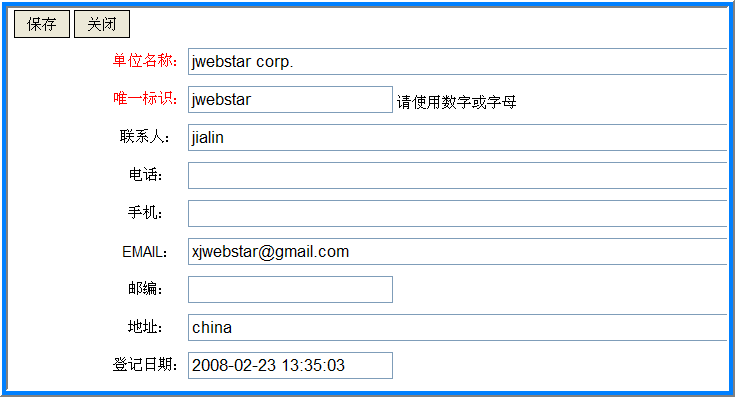
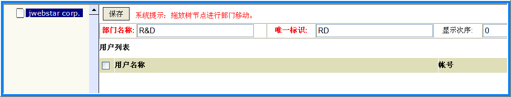
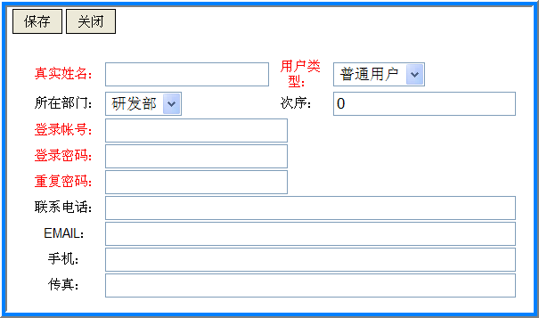
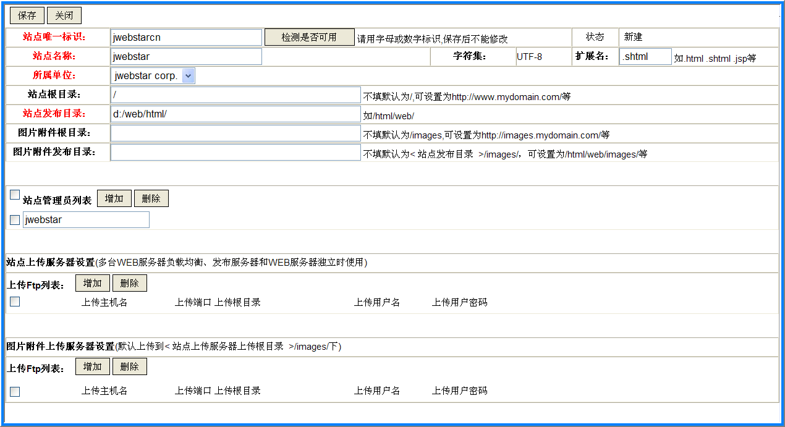
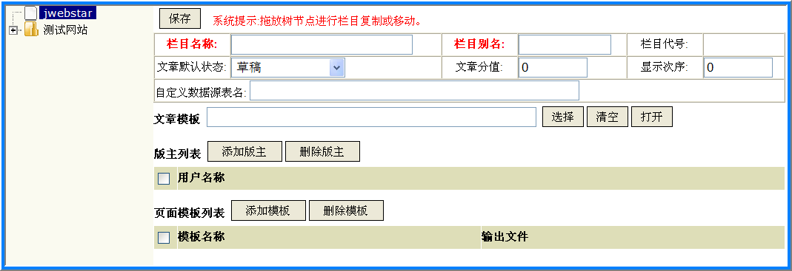

NPS站点配置与管理
本手册用于站点的配置与管理。


单位管理
单位管理主要管理单位的开户、部门设置和人员帐号管理。
- 单位开户
-
使用系统管理员登录NPS。系统安装后默认系统管理员用户名为system，密码为manager。
在左侧导航栏中点击单位管理，在右侧工作区中点击添加单位按钮，如下图所示。单位名称和唯一标识是必填的，其中唯一标识是全局唯一的，建议采用单位所写。

保存后关闭新窗口，开始部门设置。 - 部门设置
-
在左侧导航栏中点击单位管理，选中要进行部门设置的单位（点击左侧的checkbox），点击部门管理按钮。
左侧树型结构中列出了所有已有部门。如果是初次开户的，在左侧树型结构中仅有单位名称。点击该单位名称，在右侧输入部门信息。

如果设立顶级部门，需要选中左侧导航栏中的顶级单位（例如图中的jwebstar corp.）。
如果要设立下级部门，需要在左侧导航栏中选中该部门的上级部门，然后点击新建下级部门按钮。
通过左侧节点拖拉实现部门合并、独立操作。 - 人员帐号管理
-
进入部门设置界面后，在左侧部门树中选定要添加帐号的部门，在右侧区域点击添加用户按钮。

红色标注的为必填项。
登录帐号既是用户名，不区分大小写，登录帐号是全局唯一的。密码长度建议在8位以上。
用户类型为超级用户的既是系统管理员帐号。只有系统管理员能开设超级用户。
站点配置
站点配置用于规划站点的部署方案和管理方案。部署方案涉及前端WEB服务器的分布、图片附件服务器的设置以及本地临时文件的目录组织。管理方案主要是指站点管理员的指派。

红色标注的为必填项。
站点唯一标识应使用英文字母或数字进行标识，是全局站点唯一ID号。站点名称可以是全名或简称，可以使用中文名称。
站点发布的所有文件都是UTF-8编码的，这就要求：
1.因此在前端WEB服务器（例如APACHE）配置时，默认编码应选用UTF-8。
2.所有模板中指定的META头应指定UTF-8编码。
3.自己制作、手工上传的静态页面，也应采用UTF-8编码（包括HTML文件META头设置和文件编码格式均采用UTF-8）。文件编码格式可以采用UltraEdit或EditPlus等专业工具转换。
扩展文件名是指发布生成文件的扩展名，该项依赖于你的WEB服务器（例如APACHE）的配置。
一般来说：
1.SHTML是指支持SSI指令的静态页面；
2.HTML或HTM就是纯粹的静态页面了；
3.特殊应用，也可以设置为JSP。例如要求严格权限控制的界面，可以发布成JSP，配置独立的服务器运行发布生成的JSP代码，与开放的HTML代码分离。
当然也可以使用你自定义的文件名后缀，例如JHTML等，但要注意配置你的前端WEB服务器以便正确识别这种格式。
站点发布目录用于存放NPS发布的系列文件。
对于大型站点，建议站点发布目录独立分区，如果使用LINUX操作系统，鉴于文件小、一个目录下文件分布多的特点，建议分区文件系统采用Reiserfs文件系统。
Reiserfs在读写大量小文件的目录性能非常高，即使处理目录下面直接存放10万个文件，性能仍然不会下降。详细参见系统优化方面的文章。
对于大型站点，建议图片附件服务器和静态页面服务器分离（例如大型门户网站）。图片附件服务器建议配置更加高效的Tiny HTTPd。在这种情况下，就需要特别指出图片附件根目录和图片附件发布目录，并设定独立的图片附件上传服务器。
1.图片附件根目录指向该图片附件服务器域名，例如http://image.jwebstar.com/；
2.图片附件规模较大的，在NPS服务器上，图片附件发布目录建议独立设置分区；
3.SAN等集中网络存储环境下大规模图片服务的，可以不设立独立的图片附件上传服务器（即不采用FTP方式在前端WEB服务器分布），而采用mount方式各服务器独立加载SAN分区方式。SAN文件系统建议采用OCFS2，便于多节点的并发写入。详细参见系统优化方面的文章。
4.系统限制性：由于图片附件采用本地化存储，要求NPS服务器采用集群架构时，应将图片附件目录全部放置在集中的存储上（例如SAN环境中），以免发布过程中找不到附件。
5.为了便于资源管理中的图片预览，图片附件根目录请使用http://或https://开头的绝对路径
上传服务器必须开放FTP服务，LINUX建议采用vsftpd。要求上传用户具有创建目录、读写文件权限。如果前端WEB服务器有多台的，可以添加多台。
发布的文件（包括图片及附件）将根据上传根目录自动计算上传路径。
站点管理员具有该站点的一切管理权限，包括部门的设置与人员增配、栏目的建立与组织、模板管理、站点的重建与发布、栏目版主的指派、文章的审核与发布。对管理系列站点时特别有用。
站点管理员必须是站点所属单位的成员。站点管理员可以有多个。
栏目管理
栏目管理使用树型结构帮助直接地实现整个站点栏目结构的设计、组织与安排。在左侧导航栏中点击栏目管理，如下图所示：

如果是首次进行栏目管理，该站点下还没有任何栏目。在栏目列表中直接点击站点名称，建立顶级栏目。
1.如果要建立顶级栏目，应在左侧栏目列表中点击站点名称，然后输入栏目信息；
2.如果要建立某个栏目的下级栏目，应在左侧栏目列表中选择该栏目，然后点击新建下级栏目按钮录入下级栏目信息；
3.在左侧栏目列表中，通过栏目的拖放可以重新组织栏目的层次结构，甚至在不同站点间的复制与迁移。
栏目名称是指易记的名字，可以使用中文，例如新闻动态。
栏目别名必须是全局唯一的，只能使用英文或数字，例如上面栏目别名可以取为news。
栏目代号用于模板标签（即topic code）按上下级层次结构进行组织，从顶级栏目开始栏目别名以.间隔叠加而成。
例如新闻动态下的中国新闻栏目，其栏目别名为china，那么其栏目代号就是news.china。
文章状态有草稿、提交待审核、审核通过待发布、自动发布四种状态。
1.草稿状态顾名思义，只有创建者本人可见；
2.提交待审核状态是指交由版主或站点管理员审核状态。一旦设定为该状态，新建保存的文章就自动提交审核；
3.审核通过待发布和自动发布状态都将马上自动发布，是重叠的。成功发布后，文章将自动转为已发布状态。
文章分值用于统计报表。
文章模板用于展示最终文章，页面模板用于生成栏目导航、首页或特定区域或特定格式要求的系列文件。
文章只能录入到最底层栏目下，每个栏目最多只有一个文章模板。例如新闻动态栏目下有中文新闻和国际新闻栏目，录入文章时必须明确指定是中文新闻还是国际新闻，而不能设置为新闻动态栏目。
因此，文章模板不是必须的，但对于最底层栏目是必须的。
页面模板的设计和实现都是非常灵活的。模板设计切割方案的不同、特定的应用需求都可能导致不同页面模板。参见模板的规划与设计技巧。
版主具有该栏目文章审核、删除、栏目重建权限。
自定义数据源用于与外部应用的对接，实现数据的抽取与发布。自定义数据源表名可以是实际的表名或视图。
例如你已有一个专业的黄金报价系统，现在需要在你的网站中自动以HTML格式发布报价信息，那么你可以采用自定义数据源与现有数据集成。更多集成方案参见外部数据集成方案。
如果采用NPS提供的企业产品管理模块，相应栏目的自定义数据源表名应采用FT_PRODUCT。